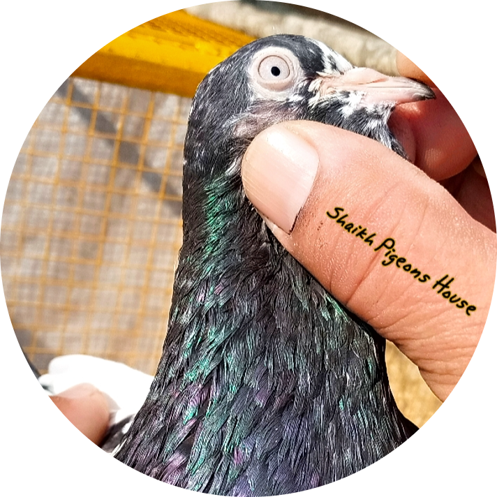

Introduced By "Shaikh Muhammad Aslam", since (1993)
- Best Pigeons Seller in Pakistan.
- We deal with all kind of Pure blood lines
- One of the best Bloods are;
- Teddy Pigeons (Chaydhary Sakhi Teddy)
- Teddy Pigeons (Mehro Wala, Saitho wala, ROYAL)
- Golden Pigeons
- Sialkoti Pigeons
- Kamagar Pigeosn (All Kinds)
- Rampuri Pigeons
- Sialkoti Pigeons
- Ali wala Pigeons
- Dab wala Pigeons
- Imam Din Pigeons
- lakha Pigeons
- Zard ankha Pigeons

We have done almost 500+ cargo in the differst cites of Pakistan.
List of some Cargoes
History of Pigeons in the World
In this article you can read about Pigeon History in Sub-Continent.
Domestic pigeons have existed in India for centuries. Trade-in Pigeons were reported between China and India through
many writers’ famous Silk-Route.
However, Mughals introduced flying pigeon breeds in India, the Descendents of Halaku Khan and Changez Khan, from
Central Asia.
It also firmly believes that high and low flyers have developed from tumbler performing Pigeons by selecting birds
that lacked tumbling and somersaulting.
Most of the older high fliers pigeons did somersault but know a day’s high flyer; pigeons do not tumble and somersault
at all.
Moghal King’s Love for Pigeons:
History tells us that the first Moghal Emperor Zaheer Babar(1483-1530), King Umer Sheikh Mirza, was an ardent Pigeon
Fancierbr
who died inspecting his Pigeon Loft at Akshi in Farghana.
That Pigeon fancy was very popular, and quite a fad in the past is evident from the fact no fort and palace of any
ruler and no mansion of any elite in Iran and Afghanistan was without pigeon-house during those times, and afterward
during Mughal
rule in India.
It was such a fad that, following Mughal Emperors, the local Hindu Rajas and Maharajas and Nawabs adopted it, and the
elite also took it up.
How many Breeds/Strains of the endurance flier introduced from Iran, including other places in Central Asia, has
survived and has also increased
in Indo-Pakistan sub-Continent.
The Great Mughal Emperor Jalal Din Muhammad Akbar calls pigeons flying as Ishq Bazi or love affair.
At the same time, this hobby provides the commoner with a dull kind of amusement.
His Majesty so wisely considers it as a study. He utilizes this occupation as a means and method to induce obedience
in the wayward worldly men and uses it for creating harmony and friendship.
His Majesty’s amusement derives from pigeons’ tumbling. Flying is comparable to the ecstasy and satisfaction that a
devoted Dervish or holy man derives from holding communion with the God Almighty, and he praises him for the wonders
of his
creation.
Therefore, he pays so much attention to this hobby with a higher motive than only to derive worldly pleasure.
His Highness’s pigeons have reached a high perfection stage as Kings of Iran and Turan are gifting excellent
pigeons.
The trader also brings outstanding pigeons in large numbers. His Majesty was very fond of pigeons in his childhood,
but
afterward, he left this hobby altogether when he grew older and wiser.
However, he took it up again in his middle age as he became more intelligent and mature.
MOHNA ROYAL Pigeons
A well trained blue female, previously belonging to Khan-e-Azam Kokaltash, fell to his hand.
It has been further trained by him to become the best champion amongst the Royal pigeons and has been named “Mohna,”
which has acquired great fame. It has produced such very fine and excellent pigeons like the weeper, the fairy, the
diamond, and the aloe royal.
These pigeons have obtained the finest pigeons that in quality excel those of Sultan Umer Sheikh Mirza and Sultan
Hasan Mirza, pushing them to oblivion.
Indeed improvements made by His Majesty have not only astonished, but they have also compelled Iran and Turan’s
fanciers to abandon their old hackneyed techniques to start from the beginning.
Previously pigeons were paired indiscriminately. But His Highness thinks that pairing is essential and, in this way,
bred choice birds.
The usual method is to keep a male and female pigeon together for five or six days to acquaint themselves when they
become so familiar that they would recognize each other even after a long separation.
The hen generally lays eggs from eight to twelve days after mating, or more if she is ill or not yet mature.
Pigeons start laying eggs in September and October and separate from each other in February and March.
A hen lays two eggs but sometimes only one. The cock sits on the eggs during day time and hen during the night;
thus, they keep these warm. In winter, they incubate eggs for twenty days but seventeen or eighteen days if the
weather is warm.
For about six days, pigeons feed their young ones with pigeon milk, which means the grain is reduced to pulp in the
parents’ crops.
Afterward, they feed them with grain somewhat softened in their crops.
They continue for a month and, as soon they see that the young ones can pick up grain, they separated from their
parents.
Eggs, and sometimes young ones, are placed under other pigeons for rearing.
Homebred young ones trained. Some of these are in on a string till they get stronger and familiarise themselves with
their surroundings.
Afterward, pigeons get only one-third to one-fourth of their daily ration of grain. When accustomed to hunger, they
are gradually allowed to take flights.
They flew forty times a day. When they have shed eight out of the ten outer wing feathers, the keepers no longer allow
them to fly but make them rest.
After two months, pigeons get new feathers and get very strong. They are then let out again. This is the best time for
showing their skill.
As soon as pigeons learn to perform the competitions, they are presented to His Majesty for inspection and kept for
four months in readiness
to show their skill.
Pigeon History In Pakistan
There were two main centers of high flier fanciers in Pakistan before it came into existence in 1947, Sialkot and
Kasur.
The breeds and strains most prevalent in the two cities differed quite a lot, both in the color of body feathers and
eye.
However, all the two cities’ breeds originally belonged to the United Provinces and Central Province of India.
In these two Indian Province, these performing pigeons were introduced by Moghal, mostly from Iran or other Central
Asia parts.
Refugees migrating after 1947 from the Indian part of Punjab and the United and Central Provinces brought some breeds
that added to the breeds and strains constituting the high fliers that existed in Pakistan at that time—brought even
earlier
birds to Pakistan from other parts of India.
Especially from Feroz Pur and from Jalal Abad from the loft of Late Nawab Saadat Ali Khan.
In Pakistan, competitions held in the early part of the last Century in the winter months and most high fliers
belonged mainly to such breeds as Black, Red, Yellow, Ash, etc.,
in selves, badges, and some mottles. Breeds that also contribute to most of the present-day English Flying
Tippler.
Like the English Flying Tippler, high fliers in India developed from its runner type, the tumbler, which
also evolved another
kind of performer, the Roller.
When competitions were later shifted to the comparatively warmer month of October and then to September, these
breeds/strains were discarded and replaced with Sialkot breeds, mostly prints, of the high flier as these could
withstand and cope with
to do so.
The major cause of change in the flying season was improved birds and their flying ability.
Winter days are becoming too short for the improved birds, and night flying unknown at that time.
However, Breeds/Strains mentioned earlier had to be discarded as even the improved and the best birds of the
Breeds/Strains that were popular failed to perform well under warmer conditions.
Must have taken efforts to acclimatize these old breeds/strains in hand but without much success.
With time the quality of birds improved further.
Therefore, flying competition season had to be shifted once again to March and April, months much warmer than October
and September with comparatively longer day-length.
After that, competitions started in May and June. , the hottest and the driest part of the year, mainly from the 28th
of May to the 9th of June.
This period also covers the most extended day length.
Such a change brought a complete change in the breeds/strains of the high flier, and Sialkot breeds/strains replaced
with Kasur breeds/strains of the duration fliers that could withstand high temperatures low humidity better as
compared to the
former breeds.
In Kasur,
competitions are held during summer months for a long; in fact, perhaps from the very start of the fancy in that
city.
At present, not a single bird of the breeds like the Reds, Blacks, Yellow, Ash, etc. Selfs, so popular before the
creation of Pakistan, are seen amongst the birds entering the competitions.
The proportion of lighter colored breeds/strains belonging to Sialkot entered in summer competitions is hardly 1%.
What is more, even Sialkoti fanciers, who disliked Kasuri birds and never even cared to look at them in the past, have
now shifted to the latter breeds/strains almost completely, in pure form or the form of their hybrids with Kasuri
breeds/strains.
Over 90% of the present competition birds comprise Kasuri breeds/strains in Sialkot itself during the last three or
four years, and in the Districts where preferred Sialkoti birds in the past.
In Pakistan,
Kasuri breeds/strains started replacing Sialkot breeds/strains in the late fifties or early
sixties.
The above changes have accrued because of genetic differences in the birds that could do well only in winter.
The ancient past’s cloured selves, the lighter colored Sialkot breeds/strains, mostly prints did well comparatively
milder weather conditions.
Kasuri strains/breeds are currently popular due to their much better tolerance to high temperatures and very low
humidity.
Some of Sialkot breeds/strains, such as Sundray, Wehshi, Border Wally, Tunia, Motion Wally Choohay, Ghalodoo, Daska
Wallay, are equally hardy and fly very well during hot, dry summer.
Pigeon History In Sub-Continent
Pigeon History In Sub-Continet Low Flyer
Low flyer pigeons called Daangi Wallay, Chatri Walley, and Patti walay in Pakistan.
This type of pigeons is so popular in rural areas of Province Punjab and Sindh. These pigeons were unknown in the big
city in Pakistan till very recently. These
pigeons were brought by Muslims migrating to Pakistan.
Mostly from the Feroze Pur district of India after partition. Although highly popular elsewhere, these could not gain
popularity in main cities due mainly to the major parties’ ban on them.
This type of duration flier, which, barring kitting, is flown under rules very similar to those applicable to the
English Flying Tippler, and mostly restricted to the rural area in the past, is quite popular nowadays in cities of
the Sindh
Province, including Karachi.